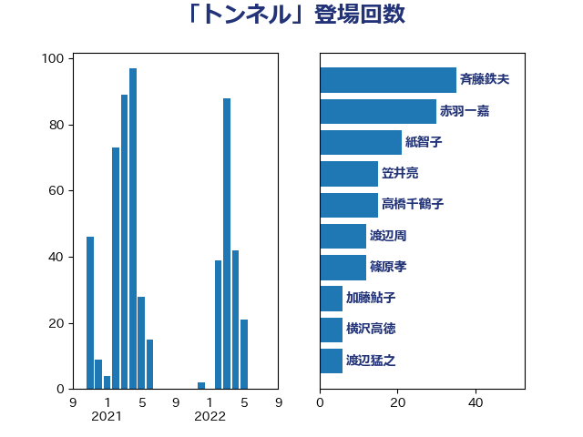

単語「トンネル」

| 斉藤鉄夫 | 公明党 | 35 回 |
| 赤羽一嘉 | 公明党 | 30 回 |
| 紙智子 | 日本共産党 | 21 回 |
| 笠井亮 | 日本共産党 | 15 回 |
| 高橋千鶴子 | 日本共産党 | 15 回 |
| 渡辺周 | 立憲民主党 | 12 回 |
| 篠原孝 | 立憲民主党 | 12 回 |
| 加藤鮎子 | 自由民主党 | 6 回 |
| 横沢高徳 | 立憲民主党 | 6 回 |
| 渡辺猛之 | 自由民主党 | 6 回 |
| 神津たけし | 立憲民主党 | 6 回 |
| 小山展弘 | 立憲民主党 | 5 回 |
| 山口壯 | 自由民主党 | 5 回 |
| 朝日健太郎 | 自由民主党 | 5 回 |
| 湯原俊二 | 立憲民主党 | 5 回 |
| 緑川貴士 | 立憲民主党 | 5 回 |
| 道下大樹 | 立憲民主党 | 5 回 |
| 井上英孝 | 日本維新の会 | 4 回 |
| 山添拓 | 日本共産党 | 4 回 |
| 源馬謙太郎 | 立憲民主党 | 4 回 |
| 大口善徳 | 公明党 | 3 回 |
| 室井邦彦 | 日本維新の会 | 3 回 |
| 日下正喜 | 公明党 | 3 回 |
| 木村次郎 | 自由民主党 | 3 回 |
| 本村伸子 | 日本共産党 | 3 回 |
| 牧島かれん | 自由民主党 | 3 回 |
| 石井正弘 | 自由民主党 | 3 回 |
| 穀田恵二 | 日本共産党 | 3 回 |
| 蓮舫 | 立憲民主党 | 3 回 |
| 青木愛 | 立憲民主党 | 3 回 |
| 麻生太郎 | 自由民主党 | 3 回 |
| 伊波洋一 | 無所属 | 2 回 |
| 城井崇 | 立憲民主党 | 2 回 |
| 堀井学 | 自由民主党 | 2 回 |
| 大野泰正 | 自由民主党 | 2 回 |
| 小宮山泰子 | 立憲民主党 | 2 回 |
| 小林茂樹 | 自由民主党 | 2 回 |
| 本田顕子 | 自由民主党 | 2 回 |
| 杉久武 | 公明党 | 2 回 |
| 榛葉賀津也 | 国民民主党 | 2 回 |
| 稲津久 | 公明党 | 2 回 |
| 空本誠喜 | 日本維新の会 | 2 回 |
| 萩生田光一 | 自由民主党 | 2 回 |
| 赤澤亮正 | 自由民主党 | 2 回 |
| あかま二郎 | 自由民主党 | 1 回 |
| ながえ孝子 | 無所属 | 1 回 |
| 中野英幸 | 自由民主党 | 1 回 |
| 伊藤岳 | 日本共産党 | 1 回 |
| 加田裕之 | 自由民主党 | 1 回 |
| 北神圭朗 | 無所属 | 1 回 |
| 小寺裕雄 | 自由民主党 | 1 回 |
| 山崎正恭 | 公明党 | 1 回 |
| 岡本あき子 | 立憲民主党 | 1 回 |
| 岩渕友 | 日本共産党 | 1 回 |
| 岸信夫 | 自由民主党 | 1 回 |
| 後藤祐一 | 立憲民主党 | 1 回 |
| 杉本和巳 | 日本維新の会 | 1 回 |
| 松沢成文 | 日本維新の会 | 1 回 |
| 枝野幸男 | 立憲民主党 | 1 回 |
| 柿沢未途 | 無所属 | 1 回 |
| 森屋隆 | 立憲民主党 | 1 回 |
| 森本真治 | 立憲民主党 | 1 回 |
| 横山信一 | 公明党 | 1 回 |
| 橋本聖子 | 無所属 | 1 回 |
| 武井俊輔 | 自由民主党 | 1 回 |
| 泉田裕彦 | 自由民主党 | 1 回 |
| 津島淳 | 自由民主党 | 1 回 |
| 浜口誠 | 国民民主党 | 1 回 |
| 浜地雅一 | 公明党 | 1 回 |
| 滝波宏文 | 自由民主党 | 1 回 |
| 田村憲久 | 自由民主党 | 1 回 |
| 田村智子 | 日本共産党 | 1 回 |
| 石原正敬 | 自由民主党 | 1 回 |
| 福島伸享 | 無所属 | 1 回 |
| 美延映夫 | 日本維新の会 | 1 回 |
| 荒井優 | 立憲民主党 | 1 回 |
| 西田昌司 | 自由民主党 | 1 回 |
| 近藤和也 | 立憲民主党 | 1 回 |